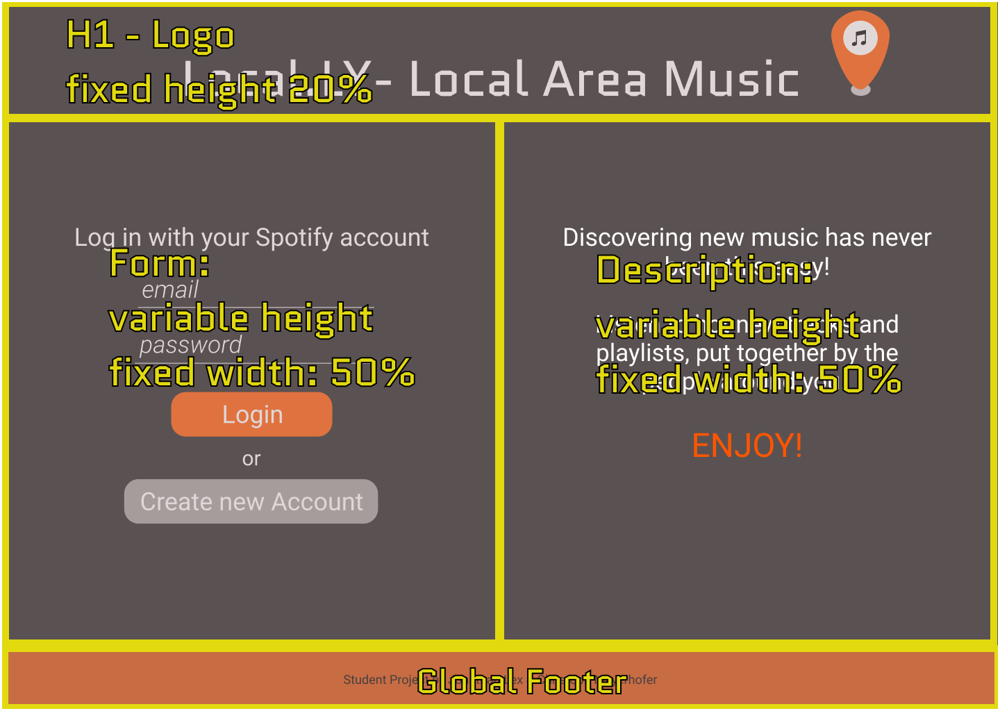
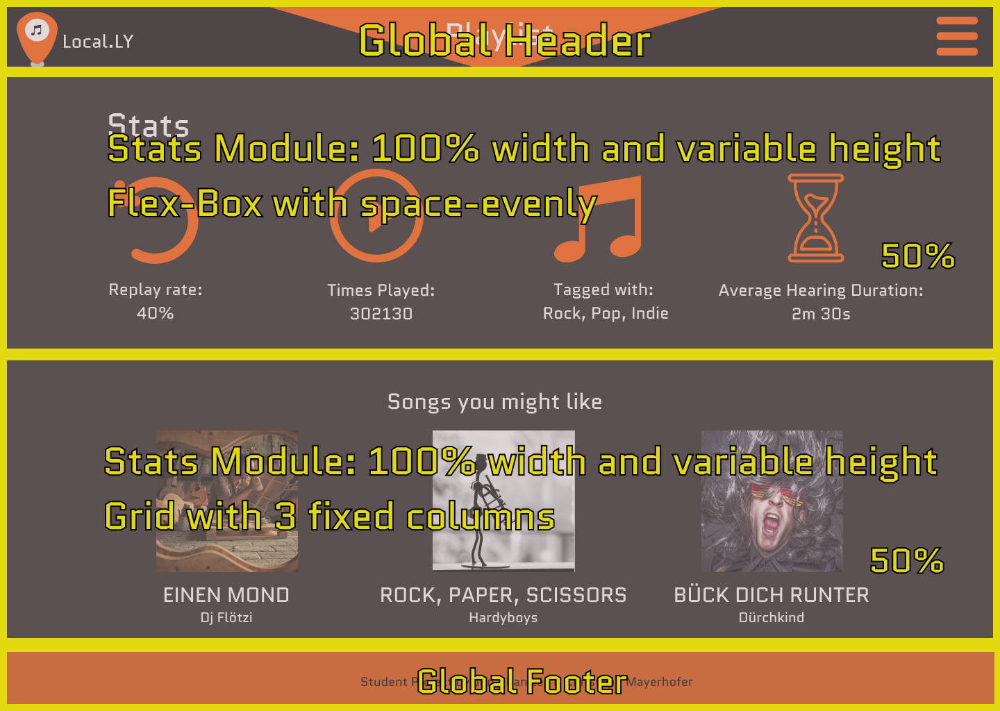
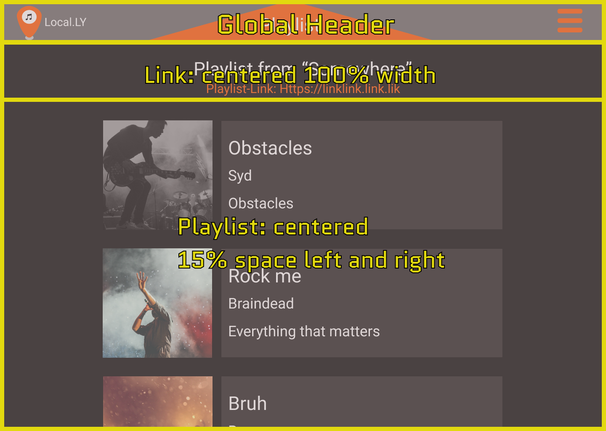

Some page_layouts
<%=require('../src/partials/menu.html')%>
Page Layout
Login
This layout is used to provide a form, where the user can connect his Spotify account with our app, and to simultaneously explain, why we need this information. By splitting the page vertically, we try to emphasize, that both parts are equally important.
Stats
To display additional information and statistics about currently played songs and playlists, we created this layout. The large, simple icons are positioned evenly to convey the information in an easy understandable way.
Playlist
This layout should be used to display the actual playlist. Because it’s supposed to overlay the previous screen, its background is darkened but also somewhat opaque. The songs are displayed in a centred list.
